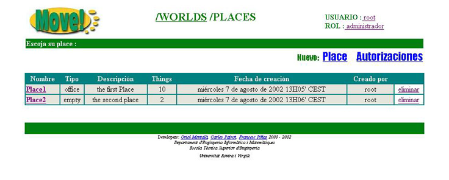
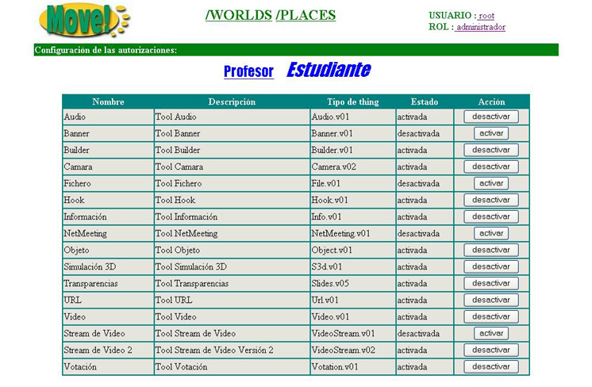

4.4 Definir privilegios en un World
Lo primero que haremos es definir lo que entendemos por Privilegios. Pues bien, definiremos privilegios que tiene cada rol en un World
como al conjunto de tools que pueden utilizar todos los usuarios que pertenecen a este rol dentro de un determinado World.
Solo podremos definir privilegios para los rols, Estudiante y Profesor. El rol Administrador tendr� acceso a todas las tools
en cualquier de los Worlds.
Dicho esto, Ahora ya estamos en disposici�n de definir privilegios en un World.
Primero de todo debemos entrar en un World.

Una vez dentro del World podremos ver que en la pantalla donde aparecen todos los Places que contiene este World, ahora aparece una nueva opci�n, .Si clicamos sobre ella entraremos a la pantalla donde podremos definir los privilegios de cada rol sobre las diferentes Tools.

Observaremos que aparece una tabla con todas las Tools que hay disponibles en MOVE!, y en su parte superior los nombres de los rols sobre los cuales podremos definir privilegios. El nombre del rol que est� en cursiva es al que pertenece la informaci�n actual de la tabla.
Para cada Tool tendremos la siguiente informaci�n:
- Nombre: nombre de la Tool
- Descripci�n: descripci�n de la Tool
- Tipo de Thing:
- Estado: estado en el que se encuentra actualmente la Tool para este rol
- Acci�n: Nos permite activar o desactivar la Tool para que pueda ser utilizada o no por el rol seleccionado